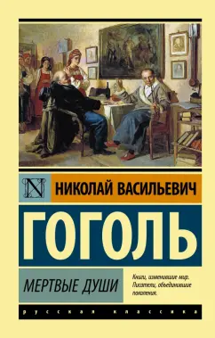

О книге
«Мертвые души» — роман Н. В. Гоголя, написанный в 1842 году. Это произведение считается одним из шедевров русской
литературы и важной вехой в развитии реалистического романа.

Сюжет
Роман описывает путешествие главного героя, Павла Ивановича Чичикова, по российским губерниям. Он собирается
купить «мертвые души» — умерших крестьян, которые числятся на учете, чтобы использовать их для повышения своего
социального статуса и финансового положения. Чичиков встречает различных помещиков, каждый из которых
представляет собой определенный тип личности и отражает пороки общества того времени.
Темы
Основные темы романа включают:
- Критика общества: Гоголь остро критикует бюрократию, коррупцию и лицемерие русского
общества.
- Человеческая природа: Роман исследует мотивации и пороки человека, его стремление к
богатству и власти.
- Идентичность: Чичиков представляет собой сложный образ, символизирующий поиск себя и своего
места в обществе.
Персонажи
Главные персонажи романа включают:
- Павел Иванович Чичиков: Главный герой, хитрый и расчетливый человек, который пытается
обмануть систему.
- Манилов: Помещик с мечтательным характером, символизирующий пустоту и бездействие.
- Коробочка: Прагматичная помещица, олицетворяющая жадность и меркантилизм.
- Ноздрев: Пьяница и хвастун, представляющий собой пороки русского дворянства.
Значение
«Мертвые души» являются не только сатирой на общество, но и глубоким философским размышлением о жизни, смерти и
человеческой сущности. Роман оставил значительное наследие в русской литературе и продолжает вдохновлять
читателей и писателей по всему миру.
Об авторе
Николай Васильевич Гоголь (1809–1852) — русский писатель, драматург и поэт, один из основоположников
реалистической прозы в русской литературе. Он родился на Украине и получил образование в Петербурге. Гоголь
известен своими произведениями, которые сочетали элементы сатиры, комедии и трагедии.
Среди его самых известных работ — повести «Нос», «Шинель», «Вий» и роман «Мертвые души». В своих произведениях
Гоголь часто исследовал темы человеческой природы, бюрократии и социальной несправедливости. Его стиль отличает
глубокая ирония и яркие образы.
Гоголь оказал значительное влияние на развитие русской литературы и стал одним из первых писателей, которые
начали исследовать внутренний мир персонажей. Его творчество продолжает оставаться актуальным и изучается в
литературных кругах по всему миру.